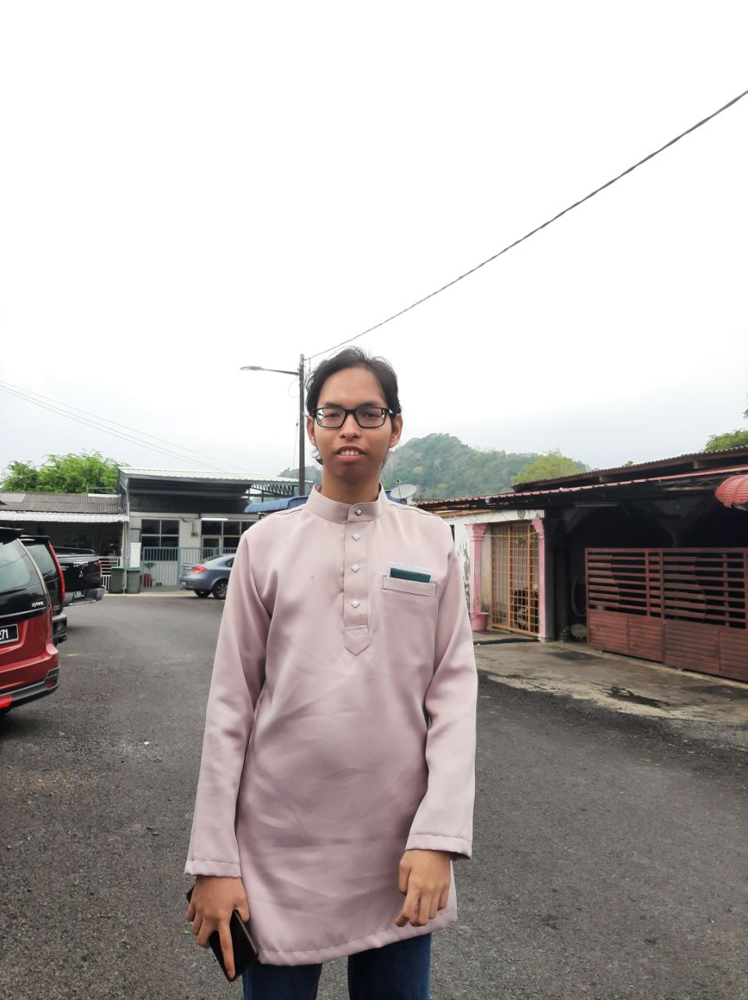
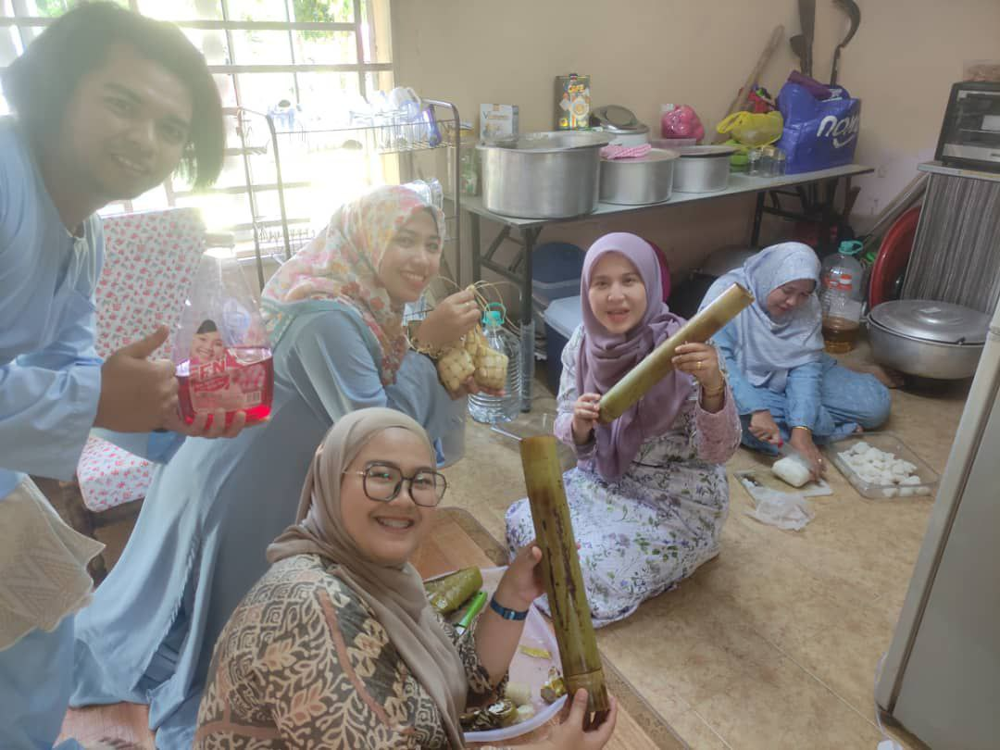
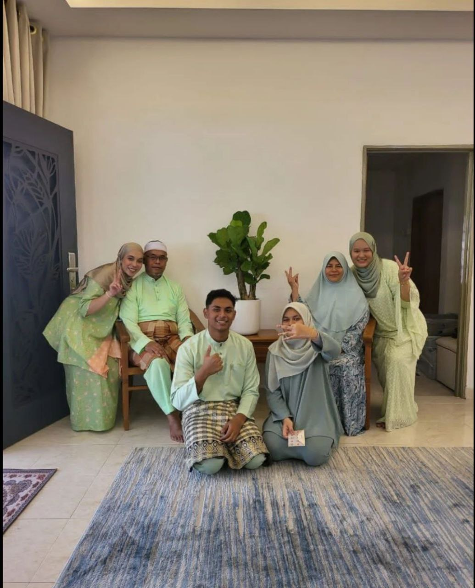

| Day / Date | Activity | Time |
| Saturday 22/4/2023 |
Take a shower & Solat Subuh | 6:00 am - 7:00 am |
| Solat Raya | 7:30 am - 9:00 am | |
| Visit grandfather's grave | 9:00 am - 9:30 am | |
| Breakfast | 9:30 am - 10:00 am | |
| Meet & take raya pictures with all family | 10:00 am - 10:30 am | |
| Visit neighboour's open houses | 10:30 am - 11:30 am | |
| Go to Pak Ngah's open house | 11:30 am - 12:00 pm | |
| Go to Pak Long's open house | 12:00 pm - 1:00 pm | |
| Welcome guests | 2:00 pm - 10:00 pm |
During my first day of raya, i wake up at 6 o'clock then take a shower and subuh prayer. I was really excited for raya celebrations with all my cousin and family's member. I wear my new baju melayu that my mom orderd before ramadan. Then, i went to mosque with my father for solat raya at 7:30 am. After done solat raya we visit my to grandfather's grave. Then, back home for breakfast. I eat nasi impit with kuah kacang and also lemang with rendag kerbau that was prepared te day before. My cousin arrive at my grandmother's house at 10 o'clock to gather with other family member's. Then we took family pictures for memories. Then we greet each other and give duit raya. I also got duir raya's even though i am not school anymore. Many people at mage age say they don't get any duit raya anymoure. Next, after that we visits grandmother's neighbour open house. They serve us many delicious food espacially their tart nenas kuih raya. It was my most favourite kuih raya then any others. After that, we visit to Pak Ngah's open house. Me and all my cousins played ps5 at his house. His name is Haziq, he is 1 year younger than me. We played GTAV together, it was really happening at Pak Ngah's house since many guest came to his house. Then, we go to Pak Long's open house and met many father's other family there. It was our last visit open house for that day because we need to go back grandmother's house for welcome guest for our open house. There's so many guest from the evening until night. I'm tired but it was worthy for the memories i got on that day. After all guest back home, my cousin and i play fireworks we bought on the evening. Then, we slept at living room after tiring day of raya.


Preparing food for breakfast

This is my Pak Long's family